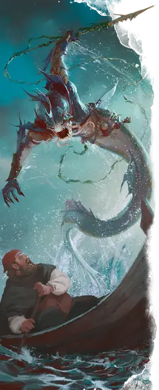

Мерроу
Merrow
Большое Чудовище, Хаотичное Злое

Класс Защиты 13 Инициатива +2 (12)
Хиты 45 (6к10 + 12)
Скорость 10 футов, Плавания 40 футов
| мод | спас | ||
|---|---|---|---|
| СИЛ | 18 | +4 | +4 |
| ЛОВ | 15 | +2 | +2 |
| ТЕЛ | 15 | +2 | +2 |
| мод | спас | ||
|---|---|---|---|
| ИНТ | 8 | −1 | −1 |
| МДР | 10 | +0 | +0 |
| ХАР | 9 | −1 | −1 |
Чувства Тёмное зрение 60 футов, пассивное Восприятие 10
Языки Бездны, Первичный (Акван)
Опасность 2 (450 опыта; БВ +2)
Особенности
Амфибия. Мерроу может дышать как воздухом, так и под водой.
Действия
Мультиатака. Мерроу совершает две атаки Укусом, Когтями или Гарпуном в любой комбинации.
Укус. Бросок рукопашной атаки: +6, досягаемость 5 фт. Попадание: 6 (1к4 + 4) Колющего урона, и цель становится Отравленной до конца следующего хода мерроу.
Когти. Бросок рукопашной атаки: +6, досягаемость 5 фт. Попадание: 9 (2к4 + 4) Рубящего урона.
Гарпун. Бросок рукопашной или дальнобойной атаки: +6, досягаемость 5 фт. или дистанция 20/60 фт. Попадание: 11 (2к6 + 4) Колющего урона. Если цель — существо Большого размера или меньше, мерроу подтягивает её к себе по прямой на 15 футов.
Бонус мастерства +2
Среда обитания Прибрежье, Под водой
Сокровища Любые
Мерроу
Огроподобный подводный похититель
Злобные подводные охотники, мерроу сочетают в себе черты огров и первобытных хищных рыб. Они таятся в прибрежных водах, выжидая случая вырваться из глубины и схватить зазевавшуюся добычу или пронзить жертву смертоносным гарпуном. Своих пленников эти охотники уволакивают в мрачные подводные логова и часто держат в кладовых, припасая на будущую трапезу.
Мерроу совершают набеги на прибрежные поселения и общины мерфолков, похищая оружие и сокровища. Это ведёт к бесконечным стычкам между мерфолками и мерроу, но также порождает досадные недоразумения с обитателями суши, которые зачастую винят в нападениях мерроу самих мерфолков.